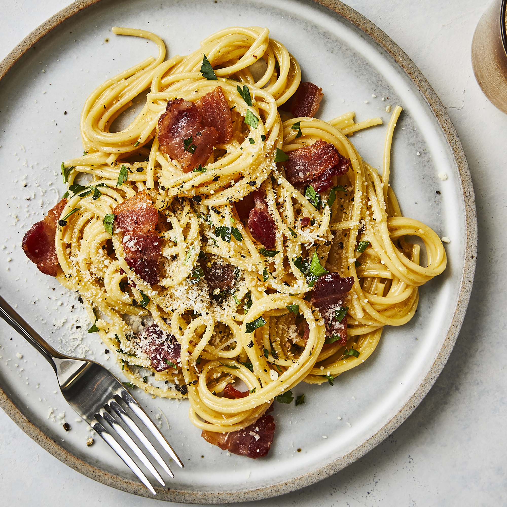

Spaghetti Carbonara
Index Pancakes
Prep: 20 mins
Cook: 20 mins
Total: 40 mins
Servings: 8
Yield: 8 servings

A super rich, classic 'bacon and egg' spaghetti dish. Great to serve
for company. This recipe also makes an unusual brunch offering.
Ingredients:
- 1 pound spaghetti
- 1 tablespoon olive oil
- 8 slices bacon, diced
- 1 tablespoon olive oil
- 1 onion, chopped
- 1 clove garlic, minced
- 1/4 cup dry white wine
- 4 eggs
- 1/2 cup grated Parmesan cheese
- 1 pinch salt and black pepper to taste
- 2 tablespoons chopped fresh parsley
- 2 tablespoons grated Parmesan cheese
Directions:
- Step: In a large pot of boiling salted water, cook spaghetti pasta until
al dente. Drain well. Toss with 1 tablespoon of olive oil, and set aside
- Step: Meanwhile in a large skillet, cook chopped bacon until slightly
crisp; remove and drain onto paper towels. Reserve 2 tablespoons of
bacon fat; add remaining 1 tablespoon olive oil, and heat in reused
large skillet. Add chopped onion, and cook over medium heat until
onion is translucent. Add minced garlic, and cook 1 minute more.
Add wine if desired; cook one more minute.
- Step: Return cooked bacon to pan; add cooked and drained spaghetti
Toss to coat and heat through, adding more olive oil if it seems dry
or is sticking togheter. Add beaten eggs and cook, tossing constantly
with tongs or large fork until eggs are barely set. Quickly add 1/2 cup
Parmesan cheese, and toss again. Add salt and pepper to taste (remember
that bacon and Parmesan are very salty)
- Step: Serve immediately with chopped parsley sprinkled on top, and extra
Parmesan cheese at table.